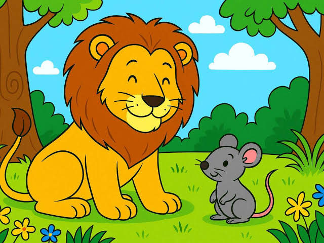

Dormía tranquilamente un león en la selva cuando un pequeño ratón, sin darse cuenta, pasó sobre su cuerpo y
lo despertó.
Iracundo, el león atrapó al ratón con sus enormes garras y estuvo a punto de devorarlo. El ratón, temblando
de miedo, le suplicó:
—¡Perdóname! Si me dejas vivir, quizás algún día pueda ayudarte. El león, divertido ante la idea de que un
animal tan pequeño pudiera ayudarlo alguna vez, decidió perdonarle la vida y lo dejó ir.
Pocos días después, unos cazadores atraparon al león en una red y lo ataron a un árbol. El león rugía con
fuerza, pero no podía liberarse.
Al oír los rugidos, el ratón reconoció la voz del león, corrió hacia él y comenzó a roer las cuerdas de la
red con sus pequeños dientes. Poco a poco, logró romperlas y dejó libre al león.
Entonces el ratón le dijo:
—Te burlaste de mí pensando que nunca podría ayudarte, pero ahora ves que hasta un pequeño ratón puede
salvar a un gran león.